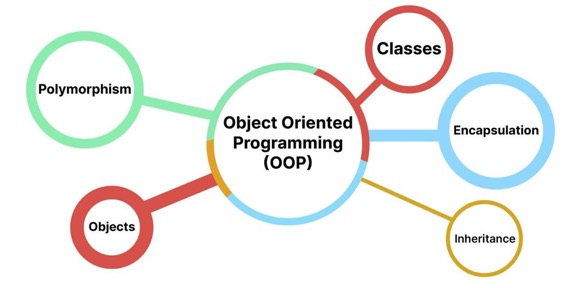

Object Oriented Programming

Background
By the late 1970's procedural programming languages had hit a practical
limit on size and complexity. A new language design was needed to allow
software to grow larger and more complex. Modelled after relationships
appearing in nature, corporate structure and other human activity Object
Oriented Programming was invented. C++, pronounced See Plus Plus, was one
of the first major languages to leverage this design paradigm. C++ remains
popular today.
Software Students
Understanding the four principles listed below are critical to your
development as a programmer and as a system desgner. You will be using
them in many modern languages such as Java and .Net programming. OOP
enables rapid application development of larger and more complex systems
compared to a procedural language.
Networking/Security Students
As a system administrator you will need to understand these concepts as
well because they appear in relational databases, cloud computing, Windows
Registry, Powershell, and file system management. Though you may not be
writting a lot of code yourself, you will be responsible for deciding if a
particular application should be allowed to run on your server. You will
be involved in diagnosisng errors, troubleshooting and repairing faulty
products.
Four Concepts
-
Encapsulation
-
Combines data (think variables) with the code (method or procedure)
that operates on that data into a single unit.
-
It is possible to restrict access to some of the data by making it
private.
-
You get to design the publicly available interface to that data
-
The Class is a template or set of instructions for how to
instantiate an object.
-
Inheritance
- Picking up behaviours from a parent.
-
Every class has at least one parent (the details vary by language).
- A parent can have many children.
-
The designer puts all common attributes as high in the heirarchy as
possible. For example, if you have a heirarchy that look like this:
Animal → Mammal → Canine → Husky – the age
property would go into the Animal Class because all Animals have an
age. This way if you also design another heirarchy Animal →
Bird → Eagle – the Eagle Class will automatically pick
up the age property from the Animal Class without having to redefine
it.
-
Abstraction
- Publicly expose an interface and hide implementation details.
-
For example: most cars are driven the same way using a steering
wheel, turn signals, brake pedal on the left and acclerator on the
right. Many cars from Europe, USA, and Asia use this interface
making it easy for people to move from one vehicle to another and
feel like they know how to drive. The details of how the car is
manufactured and how the engine and transmission are implemented are
very different across different car models and companies.
-
Implemented through abstract classes and interfaces (the details
vary by language).
-
Polymorphism
- Literally means "many forms".
-
A child can get behaviours from it's parent and have it's own unique
behaviours.
- Typically achieved through inheritance.
Code Sample in Java from a Minesweeper Game
public class MineButton extends Button {
private int row;
private int column;
public MineButton(int r, int c){
row = r;
column = c;
}
public int getRow(){
return row;
}
public int getColumn(){
return column;
}
}
The image was taken from:
https://atlacademy.az/en/post/73-what-is-oop?